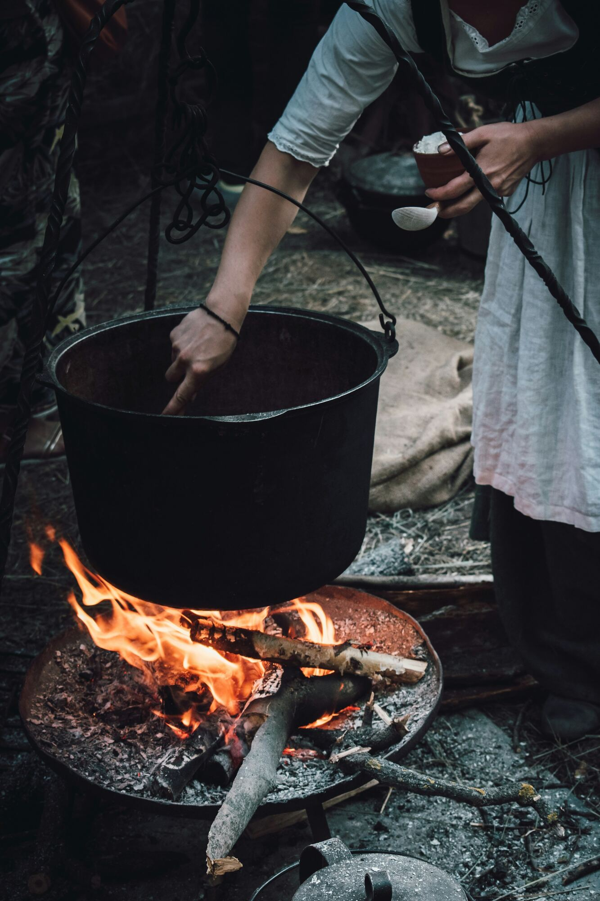
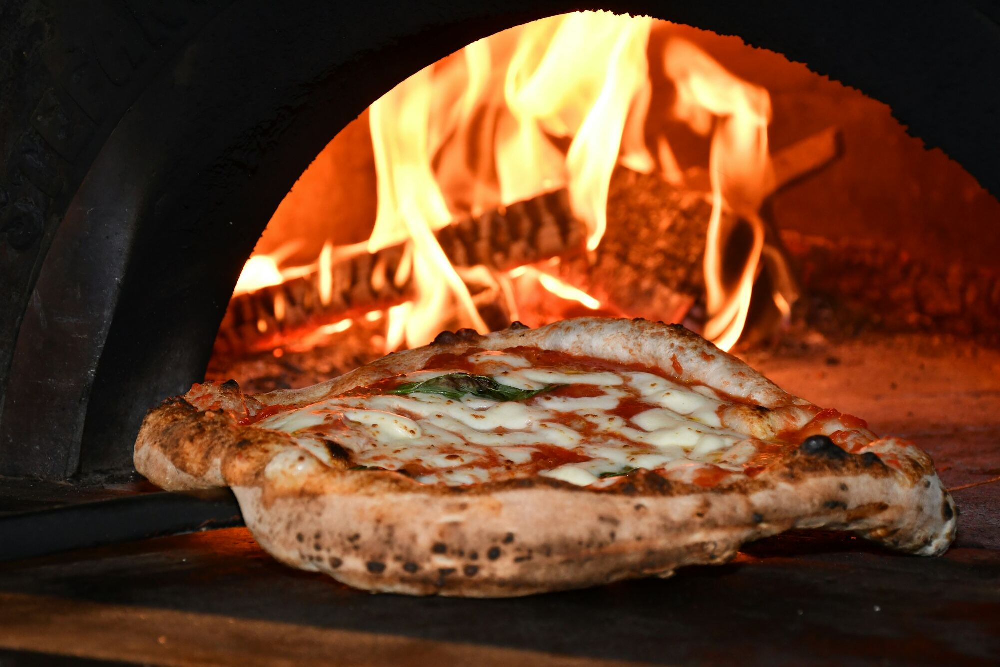

Tres cocinas,
una montaña.
Landing pages de demostración para restaurantes de Yarumal, Antioquia.
Desayuno · almuerzo · cena
Tres Tiempos
Al hacer scroll pasa un día entero, del amanecer a las estrellas.

Comida casera
El Fogón de Rosa
Fuego lento: chispas, la olla del sancocho y el recetario de la abuela.

Pizzería napolitana
Forno 2265
Del frío de Yarumal al horno a 485°. Gira la pizza para ver la carta.